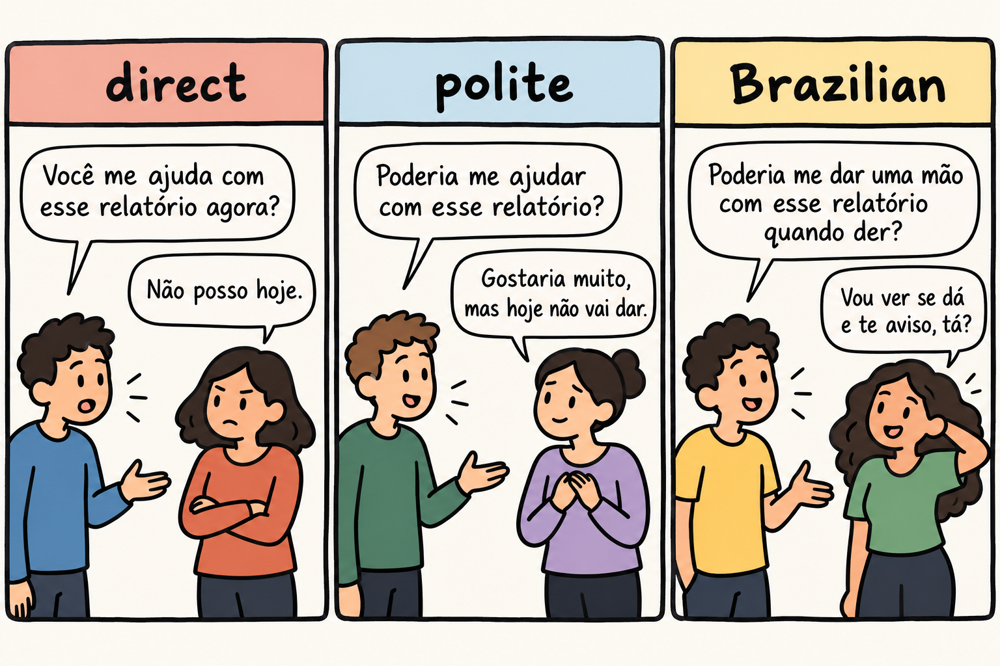

Up to this point the book has told you how to build sentences and how to hear them. It has not told you how to ask a colleague for a favor without sounding abrupt, how to hear a refusal that never uses the word no, or how to offer someone a coffee in a way that sounds warm instead of transactional. Those are pragmatic choices, and in Brazilian Portuguese they are carried by verb forms, by indirect phrasing and by a tone of affection that English speakers regularly miss.
The objective of this chapter is to give you usable politeness strategies and a decoder for indirect refusals and invitations. The English-speaker difficulty has three faces here. The first is over-formal address, the habit of reaching for the most ceremonial words available and sounding distant. The second is reading veiled refusals literally and waiting for an answer that has already been given. The third is the style gap in professional settings, where your directness is read by Brazilian colleagues in ways you did not intend [F87].
None of this requires new grammar. The forms are ordinary. What changes is when you use them and what you listen for. Work through the chapter in order: the politeness form first, then the refusals you must decode, then the tone, then the workplace, then the scripts where all of it meets.
The past future, futuro do pretérito, is the tense English speakers first meet as the conditional: "I would go", "she would help", "we would need". Portuguese uses it for what would happen under a condition. In Brazilian Portuguese it has a second everyday job, and that job is politeness. Research on the form in Brazilian Portuguese describes it as a device of politeness [F82]. That is why requests and offers in shops, at work and between neighbors so often arrive in a tense that has nothing to do with the past and nothing to do with any future event.
Author's illustrations:
In both sentences the verb is in the past future: poderia comes from poder and gostaria from gostar. Nothing in the situation is set in the past. The speaker is asking now and offering now. The tense is doing social work, not time work, and the politeness function of that form in Brazilian Portuguese is what the source above documents [F82].
Now compare the same request in the present form. Author's illustration: "Pode me ajudar?" "Can you help me?" (PAW-djee mee ah-joo-DAHR). That sentence is not rude in itself. It is the everyday form between people who already know each other, and it is the shape you will hear most often in fast speech. It is also shorter, more direct and less softened. As the author's suggestion, keep the past future for moments where the other person owes you nothing: a first contact, a favor from a stranger, a request at work. Between friends, the shorter form is normal use.
Listening note, as the author's suggestion: when you hear the past future in a request, do not search for the missing condition. There may be no condition at all. The speaker may simply be asking you politely. Replying with a plain yes or a plain no is fine, and adding a softener of your own shows you understood the register.

One expectation will save you a long wait, and it is the author's suggestion rather than a source claim: the answer to a request may come in a sentence about checking, seeing or trying, and it may already be negative. Brazilian interaction has well-known formulas for refusing without saying no, and research on veiled refusal names two of them: "Vou ver e te aviso" and "Vou ver se dá" [F83].
Take the phrases apart. Vou ver e te aviso is literally "I will see and I will let you know", and vou ver se dá is "I will see if it works out" or "if it can be done". In the interaction described by the source, both work as refusals [F83]: the answer is negative, and the speaker protects the relationship by leaving the door formally open.
Author's illustrations of the formulas in conversation:
The decoder, as the author's suggestion, is simple: treat the phrase as a no and stop counting on the promised message. If the answer really matters to you, make it easy for the other person to close the subject. Author's illustration: "Sem problema, se não der, tudo bem." "No problem, if it does not work out, that is fine." Then drop it. Pressing for a date or a commitment after a veiled refusal puts your interlocutor in the position this whole system exists to avoid: saying no to your face.
One case is documented in detail, and it is worth reading carefully precisely because it is a case. A visitor hears the words "Passe lá em casa mais tarde!", literally "Drop by the house later!", reads the timing, understands that they have arrived at a bad moment, and nobody says anything further [F84]. No one refuses. No one explains. The visitor draws the conclusion from the situation and the timing alone.
Read this as a documented case and not as a universal rule about invitations in Brazil. The value of the case is the reading process it shows: timing and context carried the meaning, and an explicit statement was not needed. As the author's suggestion, when an invitation arrives with a vague time attached, answer at the same level of openness and let the other person reopen the subject if they mean it. Author's illustration: "Passo sim, mais tarde!" "I will drop by, later!" Then let it go.
The diminutive ending is one of the first things English speakers overuse and one of the last they understand. It is not only about size. A study of interactional pragmatics reports the diminutive carrying affection and confidence [F81], and the same source describes a difficulty in Brazilian interaction with saying no [F81]. The two facts belong together: in an interaction where a flat no is hard to give, warmth is carried by the forms around the message.
Author's illustrations:
A cafezinho is often a small coffee and often not about size at all: it is a warm way to offer someone your time. Rapidinho and minutinho soften a wait or an interruption. Fica à vontade invites someone to relax. None of these carry a measurement, and none of them need one.
As the author's suggestion, learn a few of these chunks and reuse them, instead of attaching the ending to every noun you meet. More important, put your energy where the difficulty actually is: recognition. You must hear the veiled refusal instantly. Producing one yourself is a later step, and it is less urgent than never again taking "Vou ver se dá" at face value.
The workplace is where this gap in style costs the most, because the stakes are repeated. A case collection from the Brazilians Working with Americans project documents the mismatch: American directness and confidence can be read by Brazilians as naivety or arrogance [F87]. The same project is a place to see what such encounters look like in practice, through the case studies it gathers [F87].
Nothing in that means you should stop being confident. It means your confidence is being read through a Brazilian lens, and the reading is not the one you intended. Here is the author's reading of what to change.
As the author's suggestion, rehearse these situations aloud before you need them. The open Portuguese materials from UT Austin and COERLL are released under Creative Commons [F88], so you can work with them at no cost and imitate what you hear.
What follows are the author's illustrations. The three versions of each scene are written by the author for this book, and the judgment about which one sounds rude is the author's reading, not a source claim. Read them as patterns to adapt.
Scenario A: asking a colleague for help with a report.
Scenario B: turning down an invitation to lunch.
Scenario C: asking for an answer at work.
In the author's reading, the direct version is the one that can sound rude in each set, and the reason differs. In scenario A the direct version treats your colleague's time as already yours. In scenario B it is a bare no, and this chapter has already shown how hard a flat no is in Brazilian interaction [F81]. In scenario C it reads as an order. The polite version is safe in every register and is the one to use in writing. The Brazilian version is conversational: it apologizes or softens first, it leaves an exit, and it reaches for the veiled formula when the answer is negative.
Now the transfer English speakers can make immediately, offered as the author's suggestion and not as a tested method. Your English already has the politeness device this chapter teaches. "Could you" is the past future in disguise, and "I would like" is the same move as "Gostaria de". Transfer the habit directly. When you want to soften a request in Portuguese, reach for the past future exactly where you would say "Could you" in English, and reach for "Gostaria de" exactly where you would say "I would like". The mapping is a suggestion from the author; verify it against real use as you go.
Two forms carry most of the value in this chapter: the past future of poder and gostar for requests and offers, and the two refusal formulas for recognition. The diminutive chunks come next, because they are cheap to learn and they change the temperature of a sentence. The workplace material is a matter of applying those forms and adding an exit to every request. If you memorize one line, make it "Vou ver e te aviso", and know what it means when you hear it.
Spanish is both support and trap, and politeness is one of the places where the support can mislead you. English-Spanish bilinguals depend on Spanish when learning Portuguese, whatever the order in which they acquired their languages [F62]. Spanish hands you a conditional for free and a diminutive for free, and both arrive with Spanish habits attached.
The three traps most relevant to this chapter are the author's suggestions, not sourced claims.
Now the sound drill, because a soft message still needs hard consonants. English-Spanish bilinguals produce voiced stops as Spanish-style approximants [F36], so b, d and g can come out soft and continuous instead of closed. In Portuguese, produce them as real stops, with a complete closure and a clean release, especially between vowels. Say these author's illustrations slowly and keep the consonant hard:
Put each word into a short phrase of your own, then say it again at conversational speed without letting the consonant soften. The dependence described above [F62] is the reason this drill is not optional polish.
Retrieving what you just read is what makes it stick: research comparing self-testing with rereading favors testing [F94]. Answer from memory first, then check the key.
Checking against the text is part of the work, not a failure [F94].
As the author's suggestion, here is a simple calendar for this chapter. Read it once today, then come back on these days:
On each return, run the self-test from memory before you reread anything, then reread only the parts you missed. These review points are the author's adaptation of the interval idea in a spacing study [F90], which measured a single gap between two study sessions. That source did not test this calendar, and the points above are a suggestion, not a result reported by that study. Adjust the timing to your own week if you need to; the habit of returning and retrieving matters more than the exact day.